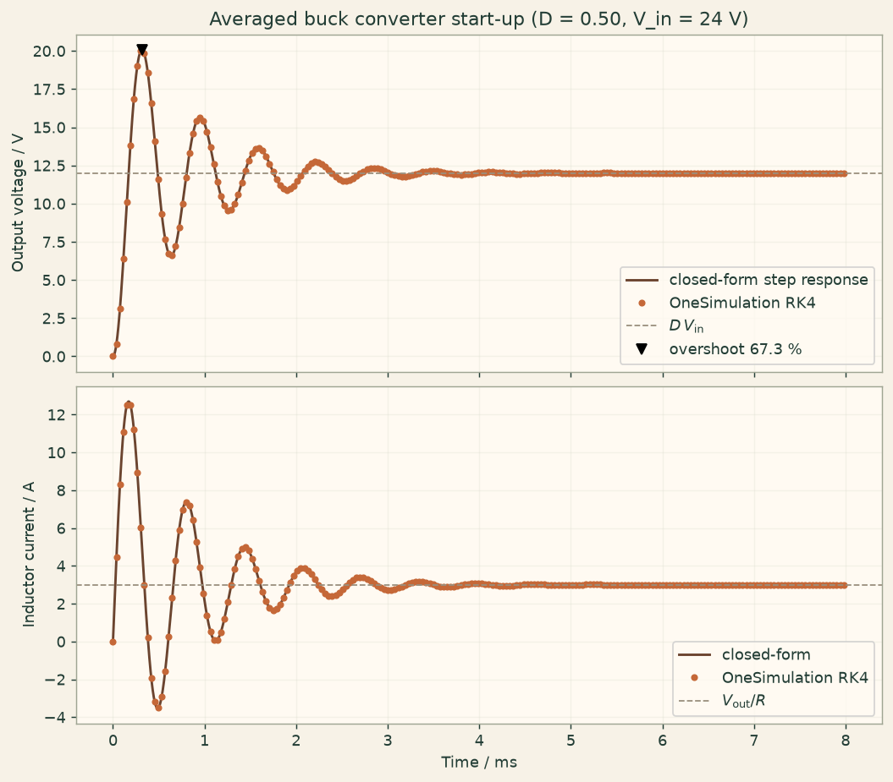

Docs › Examples › Averaged buck converter start-up
Power electronics · 0D
Averaged buck converter start-up
The state-space averaged buck converter starting up, graded against its second-order response and V_out = D V_in.

What it computes
OneSimulation integrates the continuous-conduction averaged model of a buck converter in time.
What it checks
Output voltage D V_in, inductor current, overshoot, peak time and damped frequency match the closed form to about 1e-6; the power balance holds.
The notebook
The complete notebook, cell by cell. Run it to produce the figures and the comparison printout.
A buck (step-down) converter chops a DC supply \(V_\mathrm{in}\) with a switch driven at duty ratio \(D\) and smooths the result with an LC filter that feeds a load resistor \(R\). Over one switching period the inductor sees the voltage \(D\,V_\mathrm{in}-v_\mathrm{out}\) on average. In continuous conduction the switching ripple can be averaged away, leaving the lumped state-space averaged model
OneSimulation provides this averaged converter as a zero-dimensional model with two differential states (inductor current, output voltage) and integrates it with the classical fourth-order Runge-Kutta method. Here the converter is switched on from rest and the start-up transient is followed until it settles.
Reference. The steady state is the textbook conversion ratio
Eliminating \(i_L\) gives the second-order filter equation \(\ddot v+2\alpha\dot v+\omega_0^2 v=\omega_0^2 D V_\mathrm{in}\) with \(\omega_0=1/\sqrt{LC}\) and \(\alpha=1/(2RC)\). For the underdamped case \(\alpha<\omega_0\), \(\omega_d=\sqrt{\omega_0^2-\alpha^2}\), and the start-up from \(v(0)=0\), \(i_L(0)=0\) is
The response has no zero, so it overshoots by \(e^{-\zeta\pi/\sqrt{1-\zeta^2}}\) with \(\zeta=\alpha/\omega_0\) at the peak time \(t_p=\pi/\omega_d\). We check the time series, the steady state, the overshoot and the damped frequency.
from importlib.metadata import version
import numpy as np
import matplotlib.pyplot as plt
from onesim.cad.geometry import LumpedDomain
from onesim.meshing import LumpedMesh
from onesim.numerics import Numerics
from onesim.numerics.discretization import LumpedParameters
from onesim.numerics.time import ClassicalRungeKutta4
from onesim.physics.electromagnetics import AveragedBuckConverter
from onesim.results.storage import MemoryOutputSink, Output
from onesim.simulation import Problem, Simulation
from onesim.simulation.initial_conditions import InitialValue
print("OneSimulation:", version("onesimulation"))Parameters and model
The values describe a small 24 V to 12 V point-of-load converter with a 100 µH inductor, a 100 µF output capacitor and a 4 Ω load (3 A, 36 W). The closed-form reference stays valid for any parameters as long as the filter is underdamped, \(R>\tfrac12\sqrt{L/C}\), and the averaged model assumes continuous conduction, which holds whenever the load current exceeds half the inductor ripple current.
V_in = 24.0 # V, supply voltage
D = 0.5 # 1, duty ratio
L = 100.0e-6 # H, filter inductance
C = 100.0e-6 # F, output capacitance
R_load = 4.0 # Ohm, load resistance
V_out_ref = D * V_in
I_L_ref = V_out_ref / R_load
omega_0 = 1.0 / np.sqrt(L * C)
alpha = 1.0 / (2.0 * R_load * C)
assert alpha < omega_0, "The LC filter must be underdamped for the reference formula."
omega_d = np.sqrt(omega_0**2 - alpha**2)
zeta = alpha / omega_0
overshoot_ref = np.exp(-zeta * np.pi / np.sqrt(1.0 - zeta**2))
peak_time_ref = np.pi / omega_d
end_time = 10.0 / alpha # the transient has decayed to e^-10
time_step = (2.0 * np.pi / omega_d) / 200.0
print(f"steady state: V_out = {V_out_ref:.2f} V, I_L = {I_L_ref:.2f} A, P = {V_out_ref * I_L_ref:.1f} W")
print(f"omega_0 = {omega_0:.0f} rad/s, alpha = {alpha:.0f} 1/s, zeta = {zeta:.3f}, "
f"f_d = {omega_d / (2 * np.pi):.0f} Hz, overshoot = {100 * overshoot_ref:.1f} %")
domain = LumpedDomain()
converter = AveragedBuckConverter(
domain=domain.system,
input_voltage=V_in,
duty_cycle=D,
inductance=L,
capacitance=C,
load_resistance=R_load,
series_resistance=0.0,
)
simulation = Simulation(
problem=Problem(
name="Averaged buck converter start-up",
geometry=domain,
physics=(converter,),
initial_conditions=(
InitialValue(converter.inductor_current, 0.0),
InitialValue(converter.output_voltage, 0.0),
),
),
mesh=LumpedMesh(domain),
numerics=Numerics(
spatial=LumpedParameters(),
time_integrator=ClassicalRungeKutta4(),
),
)
simulation.validate().require_valid()
sink = MemoryOutputSink()
result = simulation.run(
start_time=0.0,
end_time=end_time,
time_step=time_step,
output=Output(
fields=(converter.inductor_current, converter.output_voltage,
converter.input_power, converter.output_power),
interval=time_step,
sink=sink,
),
)
times = np.asarray([float(s.time) for s in sink.snapshots])
def series(field):
return np.asarray([
float(np.asarray(s.fields[field.field_id].values).reshape(-1)[0])
for s in sink.snapshots
])
v_out = series(converter.output_voltage)
i_L = series(converter.inductor_current)
p_in = series(converter.input_power)
p_out = series(converter.output_power)
assert len(times) > 1 and np.isclose(times[-1], end_time)Comparison with the closed-form start-up response
The reference output voltage and inductor current are evaluated at every stored time. The overshoot and the damped frequency are then read off the computed trace as one would from an oscilloscope: the first peak and the crossings of the final value.
decay = np.exp(-alpha * times)
v_ref = V_out_ref * (1.0 - decay * (np.cos(omega_d * times) + (alpha / omega_d) * np.sin(omega_d * times)))
dv_ref = V_out_ref * (omega_0**2 / omega_d) * decay * np.sin(omega_d * times)
i_ref = C * dv_ref + v_ref / R_load
v_error = float(np.max(np.abs(v_out - v_ref)))
i_error = float(np.max(np.abs(i_L - i_ref)))
print(f"maximum output-voltage error: {v_error:.3e} V ({100 * v_error / V_out_ref:.2e} % of V_out)")
print(f"maximum inductor-current error: {i_error:.3e} A ({100 * i_error / I_L_ref:.2e} % of I_L)")
assert v_error < 1e-5 * V_out_ref, "Output voltage deviates from the closed-form response."
assert i_error < 1e-5 * I_L_ref, "Inductor current deviates from the closed-form response."
# Steady state: V_out = D V_in and I_L = V_out / R after the transient has died out.
print(f"final state: V_out = {v_out[-1]:.4f} V (D V_in = {V_out_ref:.4f} V), "
f"I_L = {i_L[-1]:.4f} A (V_out/R = {I_L_ref:.4f} A)")
assert abs(v_out[-1] / V_out_ref - 1.0) < 1e-3, "Steady output voltage is not D * V_in."
assert abs(i_L[-1] / I_L_ref - 1.0) < 1e-3, "Steady inductor current is not V_out / R."
# Overshoot and peak time of the output voltage.
peak = int(np.argmax(v_out))
overshoot = v_out[peak] / V_out_ref - 1.0
print(f"overshoot: measured {100 * overshoot:.2f} % at t = {1e3 * times[peak]:.3f} ms, "
f"reference {100 * overshoot_ref:.2f} % at t_p = {1e3 * peak_time_ref:.3f} ms")
assert abs(overshoot - overshoot_ref) < 0.005, "Overshoot deviates by more than 0.5 percentage points."
assert abs(times[peak] - peak_time_ref) <= 1.5 * time_step, "Peak time is off by more than one output interval."
# Damped frequency from the crossings of the final value.
deviation = v_out - V_out_ref
sign_change = np.where(np.sign(deviation[:-1]) * np.sign(deviation[1:]) < 0)[0]
crossing_times = times[sign_change] - deviation[sign_change] * (
(times[sign_change + 1] - times[sign_change]) / (deviation[sign_change + 1] - deviation[sign_change])
)
assert len(crossing_times) >= 6, "Expected several oscillations within the simulated window."
measured_omega_d = np.pi / np.mean(np.diff(crossing_times[:8]))
print(f"damped angular frequency: measured {measured_omega_d:.1f} rad/s, exact {omega_d:.1f} rad/s")
assert abs(measured_omega_d / omega_d - 1.0) < 2e-3
# Energy bookkeeping of the averaged model: the supply delivers D V_in i_L, the
# load absorbs v_out^2 / R, and with no series resistance the two agree once the
# filter has stopped storing energy (the remaining ringing at the end of the
# window is of order e^-10 of the step, so the powers agree to a few 0.1 %).
assert np.allclose(p_in, V_in * D * i_L, rtol=1e-9, atol=1e-9)
assert np.allclose(p_out, v_out**2 / R_load, rtol=1e-9, atol=1e-9)
print(f"final powers: input {p_in[-1]:.3f} W, output {p_out[-1]:.3f} W")
assert abs(p_in[-1] - p_out[-1]) < 5e-3 * p_out[-1], "Input and output power must balance in steady state."
stored = 0.5 * L * i_L**2 + 0.5 * C * v_out**2
supplied = np.concatenate(([0.0], np.cumsum(0.5 * (p_in[1:] + p_in[:-1]) * np.diff(times))))
dissipated = np.concatenate(([0.0], np.cumsum(0.5 * (p_out[1:] + p_out[:-1]) * np.diff(times))))
energy_residual = float(np.max(np.abs(supplied - dissipated - stored)))
print(f"energy balance residual (trapezoidal): {energy_residual:.3e} J of {supplied[-1]:.3f} J supplied")
assert energy_residual < 1e-3 * supplied[-1]Figure
fig, axes = plt.subplots(2, 1, figsize=(8, 7), sharex=True, constrained_layout=True)
fig.patch.set_facecolor("#fbf5eb")
for ax in axes:
ax.set_facecolor("#fffaf2")
ax.grid(alpha=0.25)
dense_t = np.linspace(0.0, end_time, 3000)
dense_decay = np.exp(-alpha * dense_t)
dense_v = V_out_ref * (1.0 - dense_decay * (np.cos(omega_d * dense_t) + (alpha / omega_d) * np.sin(omega_d * dense_t)))
dense_i = C * V_out_ref * (omega_0**2 / omega_d) * dense_decay * np.sin(omega_d * dense_t) + dense_v / R_load
axes[0].plot(dense_t * 1e3, dense_v, color="#6b442f", lw=1.6, label="closed-form step response")
axes[0].plot(times[::12] * 1e3, v_out[::12], "o", color="#c56838", ms=3.5, label="OneSimulation RK4")
axes[0].axhline(V_out_ref, color="#9a8f7d", ls="--", lw=1.0, label=r"$D\,V_\mathrm{in}$")
axes[0].plot(times[peak] * 1e3, v_out[peak], "kv", ms=7, label=f"overshoot {100 * overshoot:.1f} %")
axes[0].set(ylabel="Output voltage / V", title=f"Averaged buck converter start-up (D = {D:.2f}, V_in = {V_in:.0f} V)")
axes[0].legend(loc="lower right")
axes[1].plot(dense_t * 1e3, dense_i, color="#6b442f", lw=1.6, label="closed-form")
axes[1].plot(times[::12] * 1e3, i_L[::12], "o", color="#c56838", ms=3.5, label="OneSimulation RK4")
axes[1].axhline(I_L_ref, color="#9a8f7d", ls="--", lw=1.0, label=r"$V_\mathrm{out}/R$")
axes[1].set(xlabel="Time / ms", ylabel="Inductor current / A")
axes[1].legend(loc="lower right")
plt.show()Going further
Give the inductor a series resistance \(R_s\): the conversion ratio drops to \(V_\mathrm{out}=D V_\mathrm{in}\,R/(R+R_s)\) and the converter dissipates \(R_s I_L^2\). Make the duty ratio a function of time to emulate a soft start, or replace it by a coupled first-order controller that regulates the output voltage, which turns the open-loop LC ringing seen here into a closed-loop response. Lower the load resistance towards \(\tfrac12\sqrt{L/C}\) and the start-up becomes critically damped.